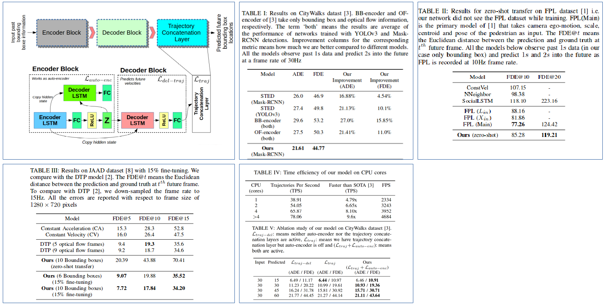

In this work we present a simple, fast, and light-weight RNN based framework for forecasting future locations of humans in first person monocular videos. The primary motivation for this work was to design a network which could accurately predict future trajectories at a very high rate of ~78 trajectories per second on a CPU.
